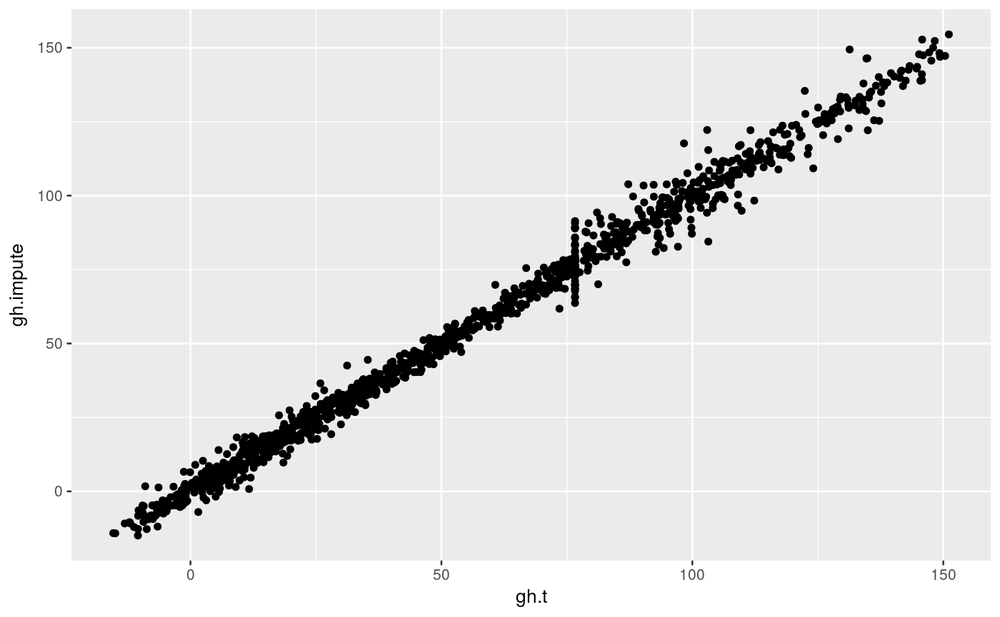

Impute missing values
Imputes missing values via Data Interpolating Empirical Orthogonal Functions (DINEOF).
ImputeEOF(data, formula, value.var, max.eof = length(X), min.eof = 1, tol = 1e-04, max.iter = 10000, validation = NULL, verbose = FALSE)
Arguments
| data | a data.frame |
|---|---|
| formula | formula passed to |
| value.var | name of the column whose values will be used |
| max.eof, min.eof | maximum and minimum number of singular values used for imputation |
| tol | tolerance used for determining convergence |
| max.iter | maximum iterations allowed for the algorithm |
| validation | number of points to use in crossvalidation (defaults to 30 or 10% of the non NA points) |
| verbose | logical indicating whether to print progress |
Value
A data table with imputed values.
Details
If data is a matrix, the formula argument is ignored and the function
returns a matrix.
References
Beckers, J.-M., Barth, A., and Alvera-Azcárate, A.: DINEOF reconstruction of clouded images including error maps – application to the Sea-Surface Temperature around Corsican Island, Ocean Sci., 2, 183-199, https://doi.org/10.5194/os-2-183-2006, 2006.
Examples
#> lon lat lev gh date gh.t #> 1: 0.0 -22.5 700 3163.839 1990-01-01 2.923688 #> 2: 2.5 -22.5 700 3162.516 1990-01-01 3.552416 #> 3: 5.0 -22.5 700 3162.226 1990-01-01 4.996166 #> 4: 7.5 -22.5 700 3162.323 1990-01-01 5.677799 #> 5: 10.0 -22.5 700 3163.097 1990-01-01 5.023650 #> --- #> 532220: 347.5 -90.0 700 2762.000 2000-12-01 122.685110 #> 532221: 350.0 -90.0 700 2762.000 2000-12-01 122.685110 #> 532222: 352.5 -90.0 700 2762.000 2000-12-01 122.685110 #> 532223: 355.0 -90.0 700 2762.000 2000-12-01 122.685110 #> 532224: 357.5 -90.0 700 2762.000 2000-12-01 122.685110aao <- aao[date == date[1]] # Add gaps to field aao[, gh.gap := gh.t]#> lon lat lev gh date gh.t gh.gap #> 1: 0.0 -22.5 700 3163.839 1990-01-01 2.923688 2.923688 #> 2: 2.5 -22.5 700 3162.516 1990-01-01 3.552416 3.552416 #> 3: 5.0 -22.5 700 3162.226 1990-01-01 4.996166 4.996166 #> 4: 7.5 -22.5 700 3162.323 1990-01-01 5.677799 5.677799 #> 5: 10.0 -22.5 700 3163.097 1990-01-01 5.023650 5.023650 #> --- #> 4028: 347.5 -90.0 700 2715.936 1990-01-01 76.620657 76.620657 #> 4029: 350.0 -90.0 700 2715.936 1990-01-01 76.620657 76.620657 #> 4030: 352.5 -90.0 700 2715.936 1990-01-01 76.620657 76.620657 #> 4031: 355.0 -90.0 700 2715.936 1990-01-01 76.620657 76.620657 #> 4032: 357.5 -90.0 700 2715.936 1990-01-01 76.620657 76.620657aao[sample(1:.N, .N*0.3), gh.gap := NA]#> lon lat lev gh date gh.t gh.gap #> 1: 0.0 -22.5 700 3163.839 1990-01-01 2.923688 2.923688 #> 2: 2.5 -22.5 700 3162.516 1990-01-01 3.552416 NA #> 3: 5.0 -22.5 700 3162.226 1990-01-01 4.996166 4.996166 #> 4: 7.5 -22.5 700 3162.323 1990-01-01 5.677799 NA #> 5: 10.0 -22.5 700 3163.097 1990-01-01 5.023650 NA #> --- #> 4028: 347.5 -90.0 700 2715.936 1990-01-01 76.620657 76.620657 #> 4029: 350.0 -90.0 700 2715.936 1990-01-01 76.620657 76.620657 #> 4030: 352.5 -90.0 700 2715.936 1990-01-01 76.620657 NA #> 4031: 355.0 -90.0 700 2715.936 1990-01-01 76.620657 76.620657 #> 4032: 357.5 -90.0 700 2715.936 1990-01-01 76.620657 NAaao.full <- as.data.table(ImputeEOF(aao, lon ~ lat, value.var = "gh.gap", verbose = TRUE, max.iter = 2000))#> With 1 eof - convergence: TRUE With 2 eof - convergence: TRUE With 3 eof - convergence: TRUE With 4 eof - convergence: TRUE With 5 eof - convergence: TRUE With 6 eof - convergence: TRUE With 7 eof - convergence: FALSEaao <- aao[aao.full[, .(lon, lat, gh.impute = gh.gap)], on = c("lon", "lat")] library(ggplot2) ggplot(aao, aes(lon, lat)) + geom_contour(aes(z = gh.t), color = "black") + geom_contour(aes(z = gh.impute))